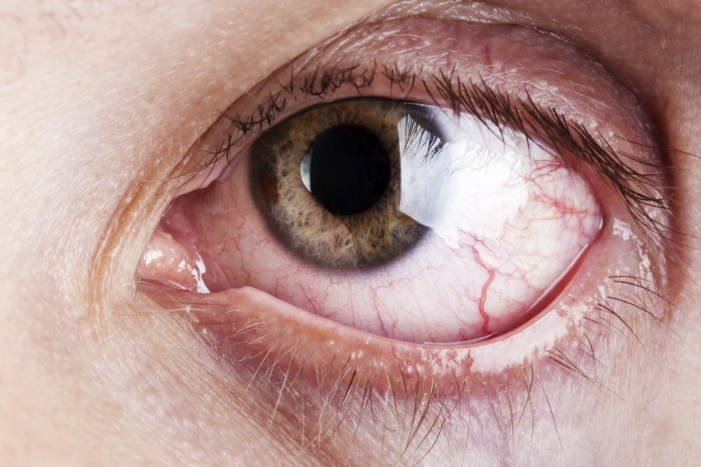

EYE ITCH
Eye allergies, whether seasonal or year-round, are often the cause of itchy eyes. These allergies can be triggered by pollen or pet dander. Irritants like dust and smoke, or products such as lotions, makeup or contact lens solutions can also cause symptoms similar to those of eye allergies

- Cure cataracts, eyelids, eye itching etc. Apply Vilvam sprig and apply a light compress on the eyes to cure cataracts, redness and itching of the eyes.
- The waiting slump is exactly that The sluggishness of waiting can be done by grabbing the green tea and squeezing two drops of the juice in the ear.